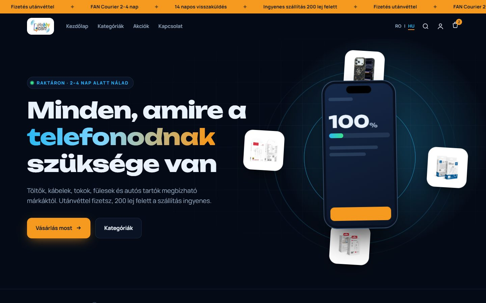
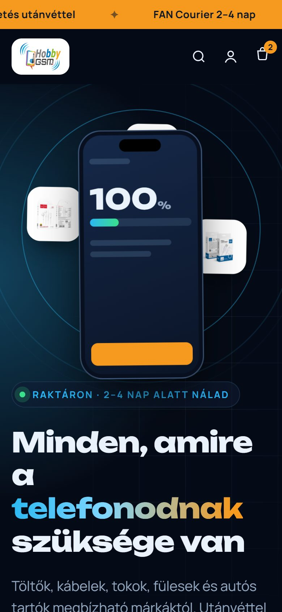
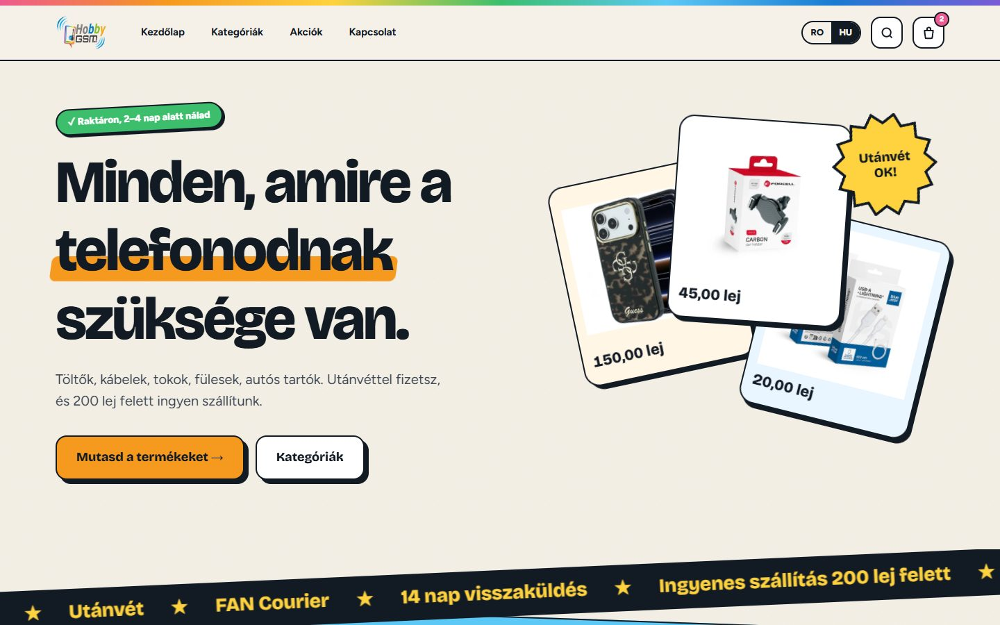
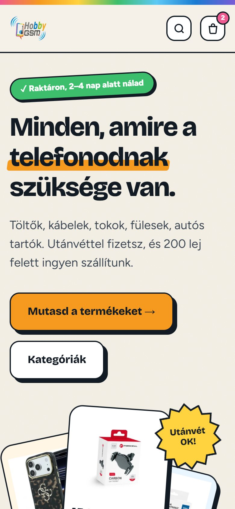
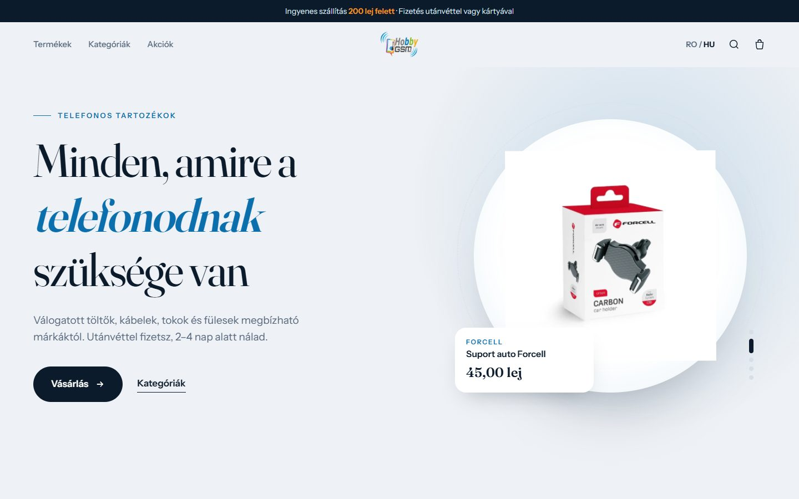
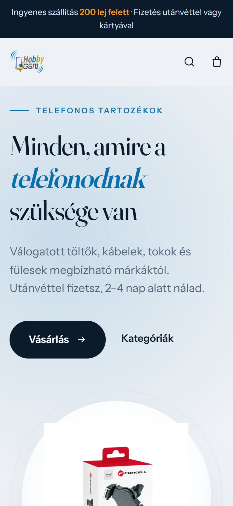

Mindhárom a bolt főoldalát mutatja, a saját termékeitekkel és áraitokkal. Kattints rá, görgess végig rajtuk (telefonon is érdemes), és írd meg, melyik tetszik a legjobban. Az irányok keverhetők is, például az egyik színei a másik elrendezésével.


Sötét, modern, technológiás hangulat.


Világos, játékos, merész — a logó színeiből.


Letisztult, prémium hatású.
Ezek látványtervek: a gombok itt még nem működnek. A választott irány a meglévő webshopra kerül rá, a kosár, a fizetés és a rendelések ugyanúgy maradnak.